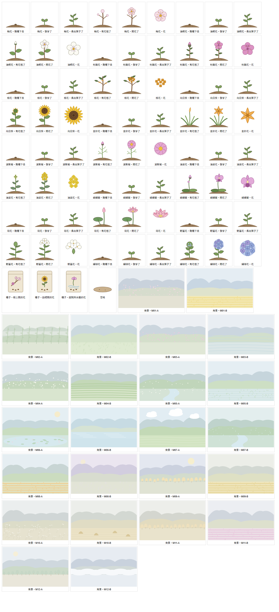

透析中的遊戲化之二：小花園的植物¶
版本：v0.1 文件狀態：草案（2026-10-10 開立） 適用讀者：院方（護理部、社工）、FDE 工程團隊
上層文件：《透析中的遊戲化之一：決定、開關與實作順序》第 5.2 節
0. 本文件的定位¶
遊戲化決定 5.2 規定：小花園的植物插畫由 AI 畫，畫之前先寫一份分析子文件，判斷要種哪些花、避開哪些花、每種花畫幾個成長階段、三種種子怎麼配、第一年之後每一季加什麼，以及共同花園的 24 張月份背景。這一份就是那份子文件，也是實作規格書 4.21（迭代 21）「開工第一件事」。
這一份不是需求文件。 需求在 SRS FR-P16、FR-P19、FR-S17 與實作規格書 4.21；這裡只決定內容。程式裡的數字（成長門檻、花的清單）以 @hd/shared 的 garden.ts 為準，這一份改了要同步改那裡。
1. 選花的五條準則¶
| # | 準則 | 為什麼 |
|---|---|---|
| 1 | 台灣慣用名、長輩一看就認得 | 第一次種下去的花要是長輩最熟的（上層 5.2「發現」階段）；花名用台灣的叫法，不用學名或外來譯名 |
| 2 | 每一季都有當季的花 | 節令花讓「這個時候開這個花」對得上長輩的生活經驗（上層 4.9 好奇心、5.2「終局」） |
| 3 | 不用紅色 | 病人端紅色只給求助按鈕（《介面設計基準》4.1、H-5）。粉紅、紫、黃、白、藍都可以；正紅、朱紅、大紅的花不收 |
| 4 | 沒有喪葬、不吉、病、毒的聯想 | 花會被送進護理站（FR-P19），送出一朵會被誤會的花，比不送更糟 |
| 5 | 畫得出來、分得出來 | AI 直接畫的是向量圖（決定 5.2 末段）；每一種花要有一眼就分得出的輪廓（花瓣數、形狀、排法），不只靠顏色（《介面設計基準》P-4） |
2. 要避開的花¶
| 花 | 為什麼不收 | 備註 |
|---|---|---|
| 菊花（白菊、黃菊） | 告別式最常見的花 | 波斯菊是另一屬、在台灣是休耕田的花海，收（第 3 節） |
| 白色百合（含台灣百合） | 告別式常用；送進護理站容易被誤會 | 台灣百合是原生種、上層 7.5 舉過例，起始先不收，等院方看過再決定能不能只收進圖鑑、不能送 |
| 白色海芋 | 喪禮花藝常用 | 竹子湖海芋季很有名，可惜 |
| 劍蘭（唐菖蒲） | 告別式花藝常用 | |
| 白色康乃馨 | 悼念母親的花 | 粉紅康乃馨可以，起始不收，母親節那一季再看（第 10 節） |
| 石蒜（彼岸花） | 名字與死亡的聯想；全株有毒 | |
| 曼陀羅、夾竹桃 | 有毒 | |
| 罌粟 | 毒品聯想 | |
| 曇花 | 「曇花一現」是短暫、消逝的意思 | 花本身很美，但對透析病人的寓意不好 |
| 鳳凰花、扶桑、聖誕紅、紅玫瑰、仙丹花、木棉花 | 紅色或朱紅（準則 3） | 若之後有黃色或粉色的品種、畫得出來，可以用那個顏色收 |
| 蘭花裡的白色蝴蝶蘭 | 告別式也用白色蝴蝶蘭 | 粉紫色的蝴蝶蘭是開幕、過年送禮的花，收粉紫色 |
判斷「可能被誤會」的準則：送進護理站時，護理師第一個聯想是不是好事。拿不準的先不收，留到第 11 節請院方看。
3. 起始的 12 種花¶
三種種子各 4 種，四季都有。「一句說明」是病人在圖鑑與開花那一頁看到的字，寫法比照介面設計基準：平實、短、不用驚嘆號。
| 代號 | 花名 | 種子 | 花色 | 應景月份 | 一句說明（病人看到的） | 輪廓 |
|---|---|---|---|---|---|---|
PLUM |
梅花 | 樹上開的花 | 淡粉、白 | 12、1、2 月 | 冬天開的花，越冷越開 | 五片圓花瓣、細花蕊 |
TUNG |
油桐花 | 樹上開的花 | 白，花心淡紫 | 4、5 月 | 四五月山上一片白，像下雪一樣 | 五片長圓花瓣、花心有細紋 |
AZALEA |
杜鵑花 | 樹上開的花 | 粉紫 | 2、3、4 月 | 春天校園和公園裡最常見的花 | 五片寬花瓣、上面一片有斑點 |
OSMANTHUS |
桂花 | 樹上開的花 | 金黃 | 9、10 月 | 中秋前後開，香味傳得很遠 | 枝上一簇簇四瓣小花、深綠葉 |
SUNFLOWER |
向日葵 | 田裡開的花 | 黃，花心棕 | 6、7、8 月 | 花朵跟著太陽，夏天開得最好 | 一圈尖花瓣、大花心 |
DAYLILY |
金針花 | 田裡開的花 | 金橘 | 8、9 月 | 八九月山上開成一片，也能煮湯 | 六片尖花瓣的星形 |
COSMOS |
波斯菊 | 田裡開的花 | 粉紫 | 11、12、1 月 | 冬天休耕的田裡開成花海 | 八片寬花瓣、瓣尖有缺口 |
RAPE |
油菜花 | 田裡開的花 | 黃 | 12、1、2 月 | 冬天田裡的黃花，開完當肥料 | 一串四瓣小花 |
PHALAENOPSIS |
蝴蝶蘭 | 庭院與水邊的花 | 粉紫 | 1、2、3 月 | 台灣的蘭花，花朵像蝴蝶 | 三片萼、兩片大圓瓣、唇瓣 |
LOTUS |
荷花 | 庭院與水邊的花 | 粉，瓣尖淡 | 6、7、8 月 | 夏天的池塘，花和葉子都很大 | 層層尖花瓣、旁邊一片圓荷葉 |
GINGER_LILY |
野薑花 | 庭院與水邊的花 | 白 | 6～10 月 | 長在水邊的白花，聞起來很香 | 綠苞上幾朵像蝴蝶的白花 |
HYDRANGEA |
繡球花 | 庭院與水邊的花 | 藍紫 | 4、5、6 月 | 一團一團的小花，梅雨季開 | 一顆球、由四瓣小花組成 |
分類留得下以後新增的花：花以代號存，不以清單位置存；存檔只存花的代號，不存圖（決定 5.4 第 8 條的精神）。每一種花多一欄「加入的時間」，第 10 節每一季加的花照同一張表往下加。
4. 三種種子¶
| 種子 | 名稱（病人看到的） | 裡面的花 | 第一次種開什麼 |
|---|---|---|---|
TREE |
樹上開的花 | 梅花、油桐花、杜鵑花、桂花 | 梅花 |
FIELD |
田裡開的花 | 向日葵、金針花、波斯菊、油菜花 | 向日葵 |
COURTYARD |
庭院與水邊的花 | 蝴蝶蘭、荷花、野薑花、繡球花 | 蝴蝶蘭 |
種子開什麼花（第 7 角：不確定性與好奇心）：
- 這位病人第一次種：照上表最右欄，開長輩最熟的那一種（上層 5.2「發現」）
- 之後：同一種子裡的花依權重抽，當季的花權重 3、還沒開過的花權重 2（兩者相乘），其他 1。所以當季、沒看過的花最容易開出來，但每一種都有機會
- 抽籤用的是這一棵植物自己的編號（平板產生），平板與伺服器算出來的一樣——斷線時種下去，連線後伺服器重算也是同一種花
- 開花之前看不到是什麼花：種子、芽、苗、花苞都只畫植物，開花那一刻才知道名字
5. 成長階段¶
每種花畫五個階段：種子、芽、苗、花苞、開花。前三個階段三種種子共用一套圖（長輩分不出幼苗是什麼花，畫得一樣反而不會猜錯）；花苞與開花每種花各畫一張，花苞的顏色已經是那朵花的顏色。
| 階段 | 成長點數 | 圖 |
|---|---|---|
| 種子 | 0 | 一小堆土、一顆種子 |
| 芽 | 1～2 | 兩片子葉 |
| 苗 | 3～5 | 一根莖、四片葉 |
| 花苞 | 6～7 | 莖、葉、一個那朵花顏色的花苞 |
| 開花 | 8 | 那朵花 |
成長點數怎麼來（上層 7.5「照療程次數長大」；實作規格書 4.21「不會枯、不會倒退、不能加速」）：
| 來源 | 點數 | 說明 |
|---|---|---|
| 每來透析一次 | +2 | 種下之後每多一次療程，每一棵都加 2。看的是這位病人有幾次療程，不是有沒有點開花園：三次沒點開，第四次點開時照樣長了三次的份 |
| 澆水 | +1 | 每次療程花園門口一份水，點一下就澆整座花園 |
| 養分 | 每一份 +1 | 透析前問卷、心情問卷、衛教做完各一份（每次療程每種最多一次，與答案無關）；遊戲的那一份等麻將連連看與記憶相簿（迭代 22、23）接上 |
| 照顧的上限 | 每棵每次療程最多 +2 | 澆水加養分再多，同一次療程一棵最多多長 2 點——這就是「不能加速」 |
算起來：種下那一次有澆水 → 當場就發芽（點下去馬上看得到變化）；每次都有澆水、做一樣任務的人，第三次療程就開花（上層 5.2「上手：第一朵花在三次療程內開」）；什麼都沒做的人第五次療程開，照樣會開。
不會枯、不會倒退：點數只會加不會減；缺席兩週、住院一個月，回來時跟離開時一樣，只是補上這段期間有來的療程（沒來就沒有）。沒有任何「好久沒來」「花渴了」的字。
6. 開花之後¶
照遊戲化決定 3.6：
- 開好的花一直留在那一格，系統永遠不自動移走
- 可以送給護理站（FR-P19），或種進這一班的共同花園（FR-S17）；送出或種下之後那一格變回空地
- 第一次開出某一種花，收進「台灣花卉圖鑑」；送走、種走之後圖鑑照樣有
- 12 格都有植物時，種子區旁安靜一句「花園滿了，可以把開好的花送出去或種到大家的花園，再種新的」，不提醒
7. 畫風與怎麼畫¶
| 事情 | 決定 |
|---|---|
| 畫風 | 植物圖鑑的線稿上色：輪廓清楚、顏色柔和、不加表情、不畫成卡通（上層 7.5「不能讓長輩覺得是給小孩玩的」） |
| 怎麼畫 | 由 AI 寫成程式產生的向量圖：每一種花的花瓣形狀、片數、排法寫成幾個參數，程式算出路徑，存在 @hd/shared 的 garden-art.ts。比起一張一張手寫 SVG 檔，改一個參數就能整批調整，兩端（病人端花園、護理站的花瓶）用同一份 |
| 安全 | 只用 path、circle、ellipse、rect 四種圖形與填色、線色、線寬、透明度幾個屬性；沒有腳本、事件屬性、外部參照、文字、transform（決定 5.4 第 6 條）。畫的時候由程式逐一對照白名單產生，驗收腳本再檢查一次 |
| 顏色 | 只在 garden-art.ts 裡（植物一張色票、背景每個月一組）；驗收腳本檢查沒有任何一個顏色落在紅色的色相（色相 345°～15° 且飽和度高）。綠色的葉子、棕色的土是植物本身的顏色，不是介面的語意色 |
| 大小 | 花園一格至少 96×96px（決定 3.6）。圖本身是 100×100 的座標，縮放不失真 |
| 動畫 | 沒有。點下去之後畫面直接換成下一個樣子（《介面設計基準》4.4：病人端唯一會自己動的是跑馬燈） |
畫得出來的程度：向量圖做得到精緻的線稿上色，做不到照片級寫實。夠不夠用，照上層 12.2 由長者在病床上實際看過再判斷（第 11 節）。
全部插畫的總覽（每種花五個階段與只有花的樣子、三個種子包、空地、24 張背景；由 garden-art.ts 畫出來截圖，1010）：

8. 共同花園的 24 張月份背景¶
照遊戲化決定 3.6：每個月一張、兩年一輪，同一個月份的兩張季節相同、畫面不同。偶數年用 A、奇數年用 B；歸檔的花園保留它那個月的背景。
畫法：遠山、近景、天空三層加一種點景，顏色刻意淡（明度高、飽和度低），退在植物後面；不畫人、不畫建築招牌、不用紅色。
| 月 | A（偶數年） | B（奇數年） |
|---|---|---|
| 1 | 冬日山稜與梅林，淡粉的花點 | 休耕田的油菜花海，遠山淡藍 |
| 2 | 早春竹林與晨霧 | 河堤與剛冒出的新草 |
| 3 | 山坡上的杜鵑叢，淡粉色塊 | 春雨後的梯田，水面映著天 |
| 4 | 油桐花開的山，綠中一點一點的白 | 茶園的梯田，一條一條的綠 |
| 5 | 溪谷裡落滿油桐花 | 剛插秧的水田 |
| 6 | 夏天的荷花池 | 海岸與淡藍的海 |
| 7 | 午後的積雲與綠色稻浪 | 山中的溪流與綠蔭 |
| 8 | 開滿金針花的山坡 | 傍晚淡紫色的天與遠山 |
| 9 | 中秋的淡月與桂樹 | 稻穗轉黃的田 |
| 10 | 秋天的芒草山坡，銀白的芒花 | 收割後的稻田與稻草堆 |
| 11 | 楓香轉黃的山林（不畫紅葉） | 休耕田的波斯菊花海 |
| 12 | 海邊的防風林與冬陽 | 山上的雲海 |
背景代號寫成 M01-A～M12-B，存在共同花園那一座的資料列上（shared_gardens.background_code），歸檔之後不跟著換。
9. 四個階段¶
| 階段 | 小花園怎麼顧到 |
|---|---|
| 發現 | 遊戲圖示在基本資訊區，護理師口頭介紹一句（決定第 2 節第 1 題）；第一次種的花是長輩最熟的（第 4 節） |
| 上手 | 種下那一次澆水就發芽；照常做任務的人第三次療程開花（第 5 節） |
| 養成 | 起始 12 種、四季都有當季的花；種子開什麼花不一定，當季的、沒看過的比較常出現（第 4 節） |
| 終局 | 圖鑑永遠收不完：每一季加新花與節令花（第 10 節）；共同花園每個月換背景、兩年一輪 |
10. 第一年之後每一季加什麼¶
上層第 5 節說終局做不好，半年後就沒人玩了。起始的 12 種大約要一年才收得齊（每種花要「種下、照顧、開花」，還要抽中），所以從第二季起每一季加三到四種，每一次都過第 1、2 節的準則，畫好之後經院方看過再上。
| 季 | 加什麼 | 為什麼這幾種 |
|---|---|---|
| 2027 年第 1 季（春節） | 水仙（黃心白瓣，過年的花）、報歲蘭、桃花（淡粉） | 過年擺水仙、報歲蘭是長輩熟悉的年節景象；桃花取淡粉的品種 |
| 2027 年第 2 季（母親節、端午） | 粉紅康乃馨、玉蘭花、茉莉花 | 母親節的花；玉蘭花是路口賣的香花、茉莉有民謠，長輩都有記憶 |
| 2027 年第 3 季（中秋） | 九層塔的花（淡紫）、牽牛花（藍紫）、睡蓮（淡紫） | 夏秋常見；九層塔是家家戶戶種的香草，開花長輩一看就知道 |
| 2027 年第 4 季（冬至、年底） | 九重葛（紫）、山茶花（淡粉品種）、炮仗花（金黃品種） | 年底圍牆上常見；顏色都避開紅 |
| 之後每一季 | 由院方或病友回饋提名，照同一套準則挑 | 加一欄「誰提名的」不記名，只記「病友提名」「護理部提名」 |
節令的驚喜：當季的花在種子抽籤時權重本來就高（第 4 節）；新的一季加進來的花，第一季也算當季。
11. 還沒決定、要長者看過的¶
| # | 事情 | 怎麼決定 |
|---|---|---|
| 1 | 畫出來的花夠不夠像、會不會像給小孩玩的 | 上層 12.2：請長者在病床上實際看圖鑑與花園，問「這是什麼花」「像不像給小孩玩的」 |
| 2 | 台灣百合能不能收（第 2 節） | 請護理部看一次：只收進圖鑑、不能送，或乾脆不收 |
| 3 | 背景會不會太搶 | 共同花園種了幾朵之後實際看；太搶就把背景的明度再拉高 |
| 4 | 一句說明的用字 | 請護理部看過；改字只改 garden.ts 那一張表 |
版本歷程¶
| 定版 | 日期 | 異動 |
|---|---|---|